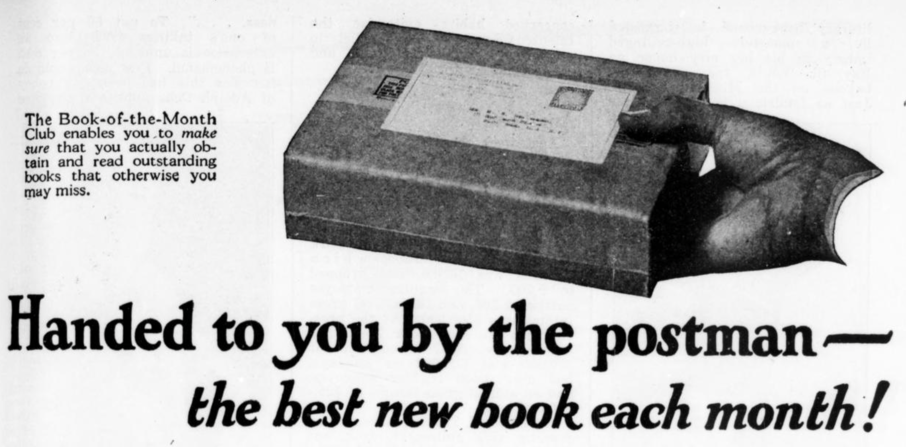

Book-of-The-Month-Club
Scherman, Sackheim, and Haas founded Book-of-the-Month Club in 1926. Over 20 years, it grew from 4,000 to more
than 550,000 subscribers with a reputation as a "sound selector of good books". It was later acquired by Time Inc. in 1977, and
still operates today.

A 1926 advertisement reads
"All the new books each month are submited for consideration by the publishers. Usually,
each month, the choice narrows among from 20-30 books. A copy of each one is read by each
members of the Selecting Committee. There is no discussion. Each one reads the books independently,
and gives them a rating in the order in which he himself prefers them.
The book
which emerges with the highest total rating becomes the "book-of-the-month".
In addition to the Book-of-The-Month-Club, this pioneering effort eventually led to the establishment Modern
Library publishing company, which ultimately spawned Random House Publishers as a subsidiary company.